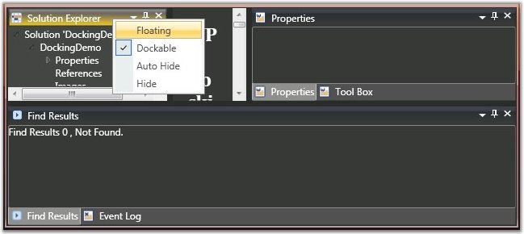
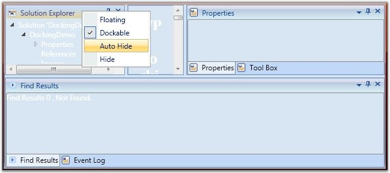

Visual styles are available for the dockable windows, which give the windows a rich and professional look and feel. The visual style for the DockingManager is set using the VisualStyle property. The following are some of the visual styles that can be applied to the Docking Manager.
|
Property |
Description |
|
VisualStyle |
Sets the visual style for the DockingManager. The options provided are as follows. · Blend · Office2003 · Office2007Blue · Office2007Black · Office2007Silver · ShinyBlue · ShinyRed · SyncOrange · VS2010 |
The following is the code snippet to apply visual styles to the DockingManager.
|
[C#] //To Set Blend skin for Docking Manager. SkinStorage.SetVisualStyle(this.DockingManager, Blend);
//To Set the Office2007Blue skin. SkinStorage.SetVisualStyle(this.DockingManager, Office2007Blue);
//To Set the Office2007 Silver Skin. SkinStorage.SetVisualStyle(this.DockingManager, Office2007Silver); |

Figure 358: DockingManager with "Office2007Black" Visual Style

Figure 359: DockingManager with "Office2007Blue" Visual Style